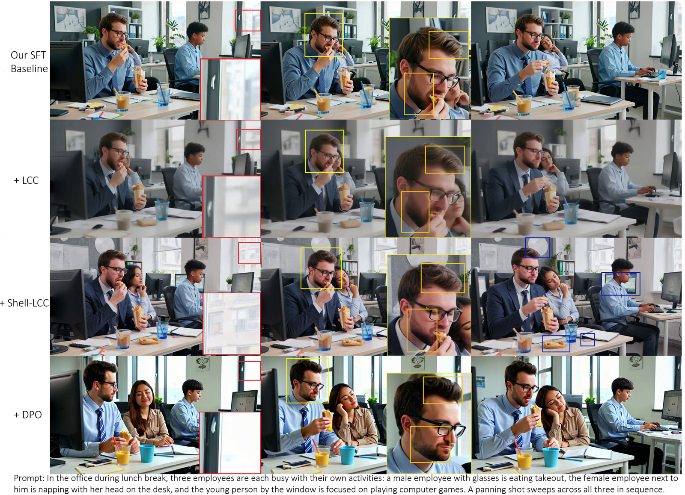
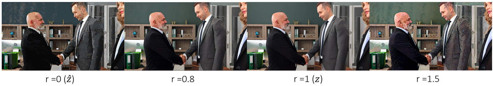
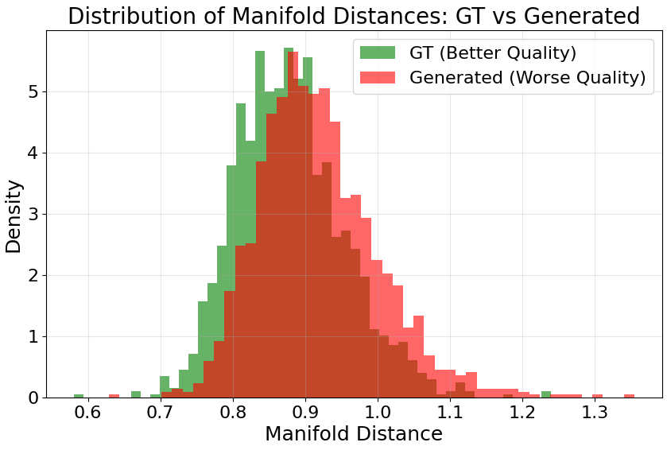
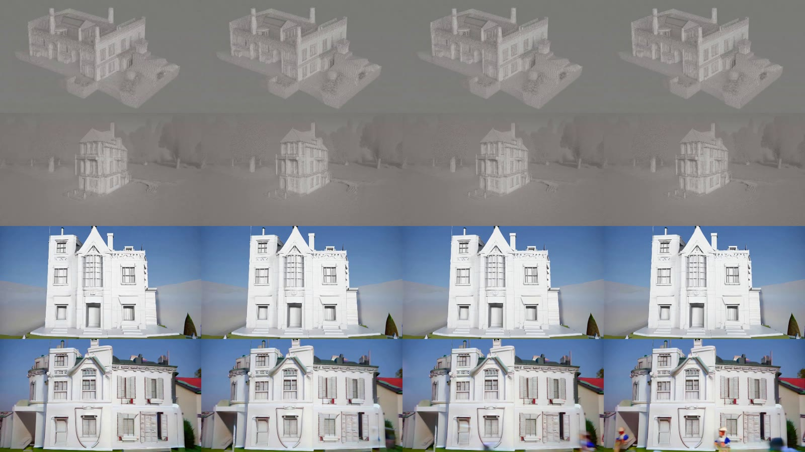
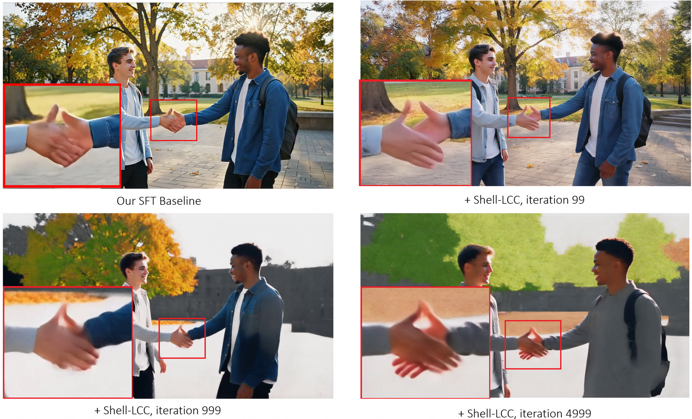

We argue that your data manifold is secretly a reward model. By modeling the manifold of high-quality SFT video patches and pulling generated latents onto it, Shell-LCC yields dense, differentiable, nearly free reward signals — no human labels, no external reward model.

Recent text-to-video (T2V) diffusion models rely heavily on auxiliary reward signals (e.g., via reward models or DPO) to align generated content with human aesthetics and improve realism. These signals, however, incur substantial computational overhead, require costly human annotations, and often yield limited improvement in fine-grained local details. In this paper, we argue that your data manifold is secretly a reward model. By explicitly modeling the manifold structure of high-quality Supervised Fine-Tuning (SFT) data and encouraging video latents to lie on this manifold, we derive dense, differentiable, and nearly cost-free reward signals that significantly improve video quality, particularly in mitigating low-level distortions. Our modeling builds upon Local Coordinate Coding (LCC), which captures the ‘skeleton’ of the manifold. However, directly applying LCC suffers from mean regression, pulling latents toward the geometric mean and losing high-frequency details. We therefore extend it to Shell Local Coordinate Coding (Shell-LCC), which models the manifold ‘surface’ as an isotropic shell to align with the true high-density region. Experiments demonstrate that our approach improves realism, enhances high-frequency details, reduces over-smoothing artifacts, and alleviates motion blur.
In high dimensions, probability mass concentrates on a thin shell (Gaussian Annulus Theorem), not at the mean. Standard LCC reconstructs toward the local mean — an empty, low-density core that looks blurry. Shell-LCC instead pulls generated latents onto the high-density shell, preserving sharpness.


Left: baseline. Right: + Shell-LCC. Same prompt, same seed. The finetuned Wan2.1-T2V-1.3B checkpoint is released on HuggingFace.
“Campfire at night in a snowy forest, with a starry sky in the background.”
“Slow-motion close-up: a galloping horse kicks up dust across an open plain, under dramatic rim lighting. Cinematic, highly detailed, photorealistic.”
“Two students meet in the campus plaza, exchanging a handshake then a warm embrace; golden autumn light, sycamore leaves drifting, cinematic warm tones.”
“A close-up of a cat grooming itself with its tongue, detailed fur and whiskers, warm light.”
Shell-LCC sharpens fine structures and suppresses over-smoothing on both Wan-T2V-1.3B and UltraWan-T2V-1.3B.

| Model | Aesthetic Q. | Imaging Q. | Overall Consist. | Motion Smooth. | Subject Consist. |
|---|---|---|---|---|---|
| Wan-T2V-1.3B | 0.6244 | 0.6629 | 0.2271 | 0.9848 | 0.9654 |
| + Shell-LCC | 0.6253 | 0.7037 +4.1 | 0.2292 | 0.9871 | 0.9715 |
| UltraWan-T2V-1.3B | 0.5744 | 0.6756 | 0.2288 | 0.9657 | 0.9225 |
| + Shell-LCC | 0.6299 +5.6 | 0.7396 +6.4 | 0.2236 | 0.9918 | 0.9658 |
VBench dimensions; higher is better. Shell-LCC sharply improves Imaging Quality (low-level fidelity) without trading off aesthetics, semantic alignment, or temporal consistency.
Shell-LCC progressively removes motion blur, but over-optimization re-induces mean regression and collapse — so the reward is applied with early stopping.

@inproceedings{zhang2026shelllcc,
title = {Your Data Manifold is Secretly a Reward Model:
Shell-LCC for Text-to-Video Generation},
author = {Zhang, Shihao and Li, Yunzhi and Yan, Yuguang and
Zhang, Junzhe and Zhao, Wei and Wang, Bohan and Zhang, Hanwang},
booktitle = {European Conference on Computer Vision (ECCV)},
year = {2026}
}